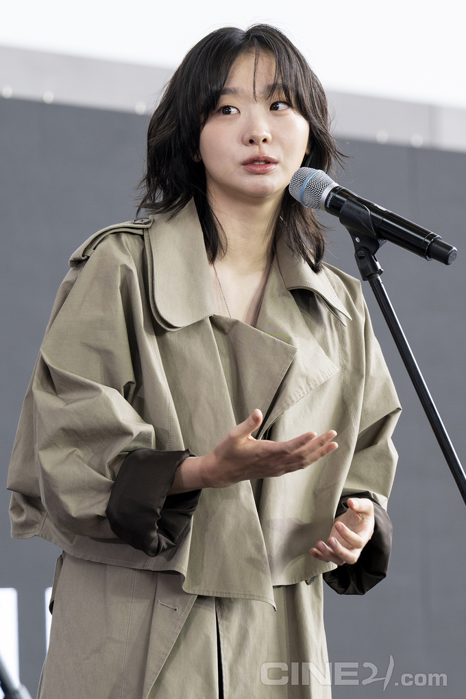

[리뷰] 재개봉 영화 <린다 린다 린다>
<린다 린다 린다>는 청춘의 무상한 시간이 품고 있는 깊은 아름다움을 탐구한다. 고등학교 문화제 공연을 3일 앞두고 부상과 보컬 탈퇴로 위기에 처한 여학생 밴드가 한국인 유학생 송(배두나)을 새 보컬로 영입해 블루하츠의 곡을 연습하려 한다. 급조된 밴드의 고군분투는 덧없는 일에도 전력을 다하는 청춘의 열기를 실어나른다. ···
자세히 보기
김소미, 최성열, 백종헌, 박종덕
주말로 접어든 영화제가 스타들의 열기로 채워지고 있다. 영화의전당 BIFF 야외무대에서 열리는 여러 오픈토크와 동서대학교 소향씨어터 신한카드홀에서 진행된 두 개의 액터스 하우스로 팬들의 걸음이 유독 분주했던 하루. 어느덧 가을의 색으로 멋내고 관객과의 만남을 가진 배우들의 빛나는 면면이 여기 있다.
이유채, 오계옥
2028년 한국, 제주 이주 정책이 시작돼 한적한 서울에서 아침을 맞이하는 남자는 사람이 아니다. 그의 정체는 ‘헬퍼 봇-5’ 올리버(신주협). 사람을 돕기 위해 제작됐지만 주인 제임스(유준상)가 떠나 홀로 살고 있다. 외롭기보단 평화로운 올리버의 생활은 이웃 로봇 ‘헬퍼 봇-6’ 클레어(강혜인)가 충전기를 빌리러 오면서 소란하고 예측 불가능해진다.
<린다 린다 린다>는 청춘의 무상한 시간이 품고 있는 깊은 아름다움을 탐구한다. 고등학교 문화제 공연을 3일 앞두고 부상과 보컬 탈퇴로 위기에 처한 여학생 밴드가 한국인 유학생 송(배두나)을 새 보컬로 영입해 블루하츠의 곡을 연습하려 한다. 급조된 밴드의 고군분투는 덧없는 일에도 전력을 다하는 청춘의 열기를 실어나른다. ···
이제 막 사진전을 연 쑤밍이(정여희)는 필름 카메라 셔터와 함께 2013년 여름으로 돌아간다. 등굣길 아침마다 동선이 겹치는 옌리야오(시백우)를 오랫동안 짝사랑해온 쑤밍이는 멀찍이 그의 사진을 찍으며 마음을 키워온다. 다소 왈가닥 구석이 있는 그는 교복 치마 아래 체육복 바지를 입는 것을 즐긴다. 하지만 보수적인 학교는 그를 두고 복장불량이라 지적하고, 이를 지켜본 옌리야오만이 그에 대항하는 시위를 연다. 빠르게 가까워진 둘. 옌리야오는 제안 섞인 고백을 한다. “이유는 묻지 말고 졸업 때까지 사귀자”고. ···
지하도는 통과하기 위해 존재한다. 그러나 여기 한 남자(니노미야 가즈나리)는 끝없이 이어지는 지하도에 갇혀버린다. 탈출 방법이 없는 건 아니다. 이상 현상을 발견하면 곧장 되돌아가고 아니면 앞으로 나아갈 것. 그리고 반드시 8번 출구를 통해서 밖으로 나갈 것. 이 규칙들을 따르면 빛을 볼 수 있다···
7.17
누적: 844,750명
개봉일: 2025-09-24
장르: 코미디, 스릴러
7.00
누적: 642,488명
개봉일: 2025-09-24
장르: 애니메이션
7.00
누적: 5,041,543명
개봉일: 2025-08-22
장르: 애니메이션
6.33
누적: 943,072명
개봉일: 2025-09-11
장르: 미스터리
6.00
누적: 64,149명
개봉일: 2025-09-27
장르: 애니메이션
7.50
누적: 24,576명
개봉일: 2025-09-17
장르: 애니메이션
7.00
누적: 5,127,231명
개봉일: 2025-06-25
장르: 액션, 드라마
8.83
누적: 22,857명
개봉일: 2025-10-01
장르: 액션, 범죄
7.00
누적: 19,988명
개봉일: 2025-10-01
장르: 애니메이션
7.25
누적: 18,191명
개봉일: 2025-10-01
장르: 액션, 범죄, 드라마
대한민국 마약 수사의 뒷거래 모든 것은 야당으로부터 시작된다!
강하늘, 유해진, 박해준